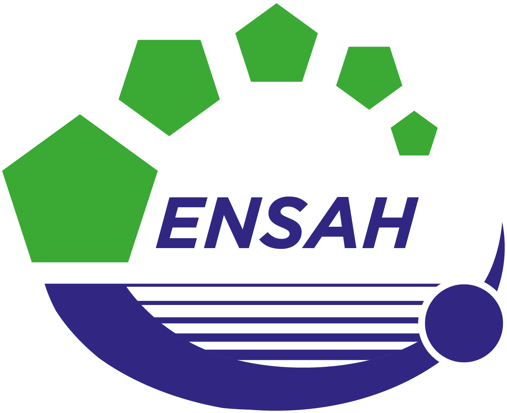
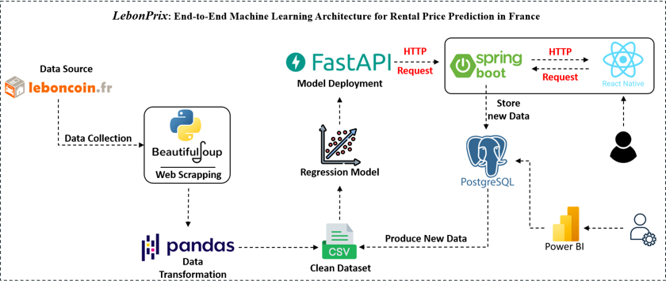
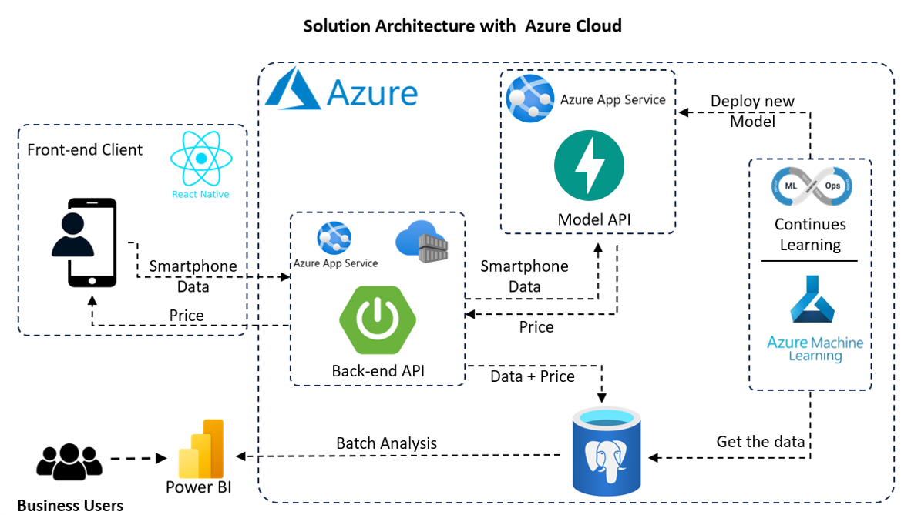
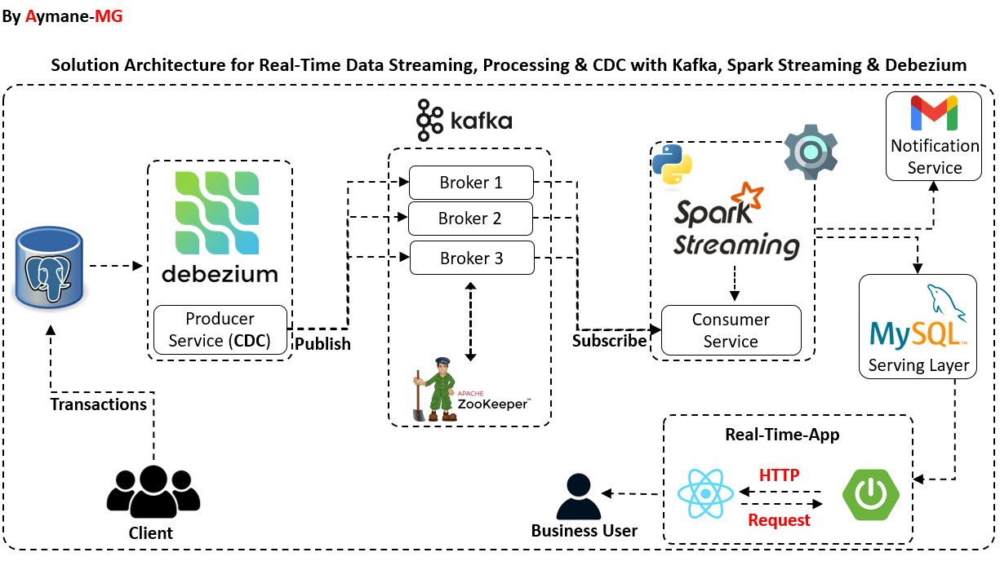
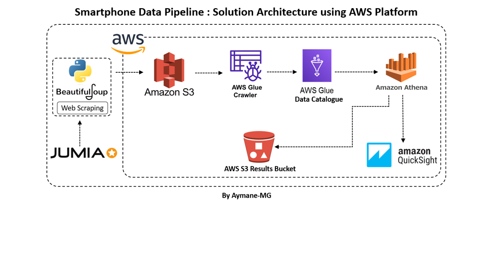
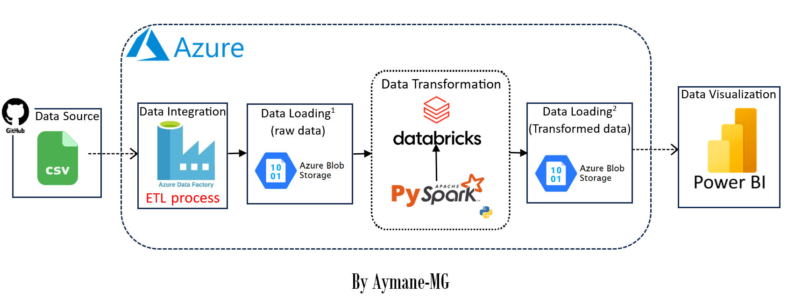
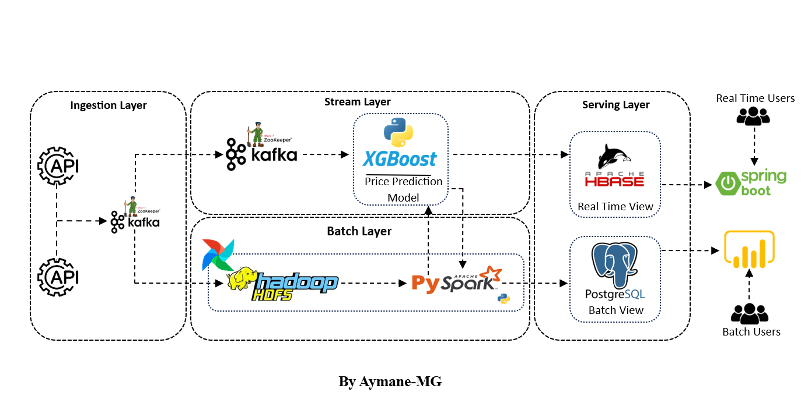

Data Engineering & Streaming
Scalable pipelines for batch and real-time data. CDC, streaming, event-driven architectures with strong quality and lineage.
I design scalable data platforms, build AI-driven pipelines, and deliver reliable, production-grade data solutions for enterprise environments.
About me
I'm Aymane, a data engineer specializing in the design and modernization of data platforms, real-time analytics frameworks, and AI-enabled information systems. I've contributed to large-scale transformation initiatives — from migrating critical enterprise data environments to building advanced retrieval pipelines and RAG systems for complex technical content.
I focus on robust, scalable, business-aligned solutions that improve reliability, enhance decision-making, and support long-term growth.
Career

Contributing to industrial production data analytics on the Final Assembly Line (FAL), driving operational decision-making and KPI reporting within Airbus's Big Data ecosystem.
Modernized INWI's enterprise data ecosystem by migrating from Oracle to Microsoft SQL Server and enabling real-time analytics.
Built a Medallion-architecture ingestion pipeline to transform 10K+ unstructured documents into structured datasets for downstream AI applications.
Contributed to the modernization of ONCF's analytics ecosystem by building scalable data ingestion pipelines, optimizing warehouse models, and delivering business dashboards.
Public work
Covered data engineering fundamentals, modern platform architectures, and production-style project demos. Extended Q&A with 20+ students.
Co-built a real-time recognition app. Data ops, labeling pipeline, React Native UI + FastAPI, Kafka + Spark Streaming + HDFS.
EDA on historical generation data, outlier detection, ARIMA/SARIMA/ARIMAX/SARIMAX benchmarking suite with weekly insights reporting.

ENSAH — Data ClubLed 30+ participants through a full end-to-end project: collect → raw → extract → transform → data warehouse → Power BI dashboard.
From classification fundamentals to full model training, evaluation, and live deployment demo with Flask + HTML/CSS/JS web app.
Expertise
Scalable pipelines for batch and real-time data. CDC, streaming, event-driven architectures with strong quality and lineage.
Intelligent retrieval-augmented generation systems with semantic chunking, embeddings, and context-aware query handling.
Modern data warehouses with dimensional modeling. Powerful dashboards and KPIs that empower decision-makers.
Complex migrations from legacy systems with minimal downtime. Metadata-driven governance for secure, cost-effective management.
Deploy, monitor, and scale ML models and APIs in the cloud. CI/CD, observability, and automation to accelerate production workflows.
Complete solutions combining backend APIs with modern interfaces. Seamless integration between data systems and web/mobile applications.
Tech stack
Portfolio
A curated selection of data engineering, AI, and cloud projects — from end-to-end pipelines to scalable AI solutions.

Full real-estate analytics platform: data scraping, Medallion architecture, XGBoost, FastAPI, Spring Boot, React Native, Power BI.

Azure migration with FastAPI, Spring Boot, React Native, and Power BI. Integrated MLOps pipelines and cloud-native deployment.

Real-time CDC pipeline with Kafka, Spark Streaming, and Debezium. Captures DB changes and updates dashboards instantly.

Migrated on-premises big data stack to AWS. Automated ingestion with Glue, Athena, QuickSight, and S3.

HR pipeline with ADF, Databricks, Blob Storage, and Power BI for comprehensive HR reporting.

Lambda architecture combining batch and real-time layers. Spark + Kafka with BI dashboards and HBase storage.